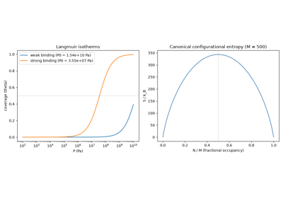
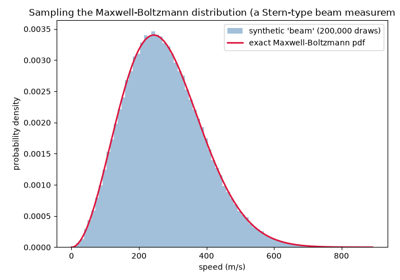
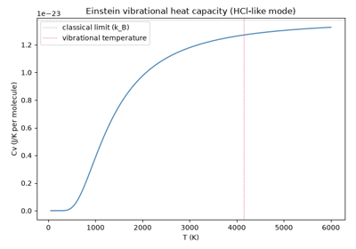
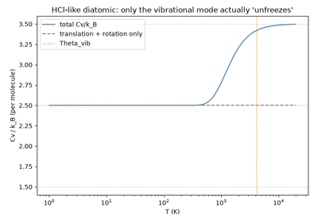

Examples#
This gallery walks through every public feature of
chemistrykit.statmech: translational/rotational/vibrational partition
functions and the thermodynamic functions derived from them; the
Maxwell-Boltzmann speed distribution; and the canonical-ensemble
lattice-gas adsorption model.
Each script in this gallery is self-contained and can be run directly with
python examples/statmech/<section>/<script>.py. Every script also
carries an RST module docstring as its title/description and uses # %%
markers to split narrative text from code, which is exactly what
Sphinx-Gallery renders into the pages below – the script is the source
of truth for what you see, not a copy of it.
Sections#
partition_functions – the Sackur-Tetrode translational entropy, and the Einstein vibrational heat-capacity curve.
maxwell_boltzmann – the Maxwell-Boltzmann speed distribution and its characteristic speeds, cross-checked against an actual
chemistrykit.mdmolecular-dynamics trajectory.lattice_gas – the canonical-ensemble lattice-gas derivation of the Langmuir adsorption isotherm.
Lattice-gas adsorption#
The canonical-ensemble lattice-gas derivation of the Langmuir adsorption isotherm.

A canonical-ensemble derivation of the Langmuir adsorption isotherm
Maxwell-Boltzmann speed distribution#
The Maxwell-Boltzmann speed distribution and its characteristic speeds, cross-checked against an actual molecular-dynamics trajectory.

Verifying the speed distribution: Stern’s molecular-beam experiment
Partition functions#
The Sackur-Tetrode translational entropy, and the Einstein vibrational heat-capacity curve.

The Einstein vibrational heat capacity, and Sackur-Tetrode entropy

The equipartition theorem, and why only one mode actually “freezes out”